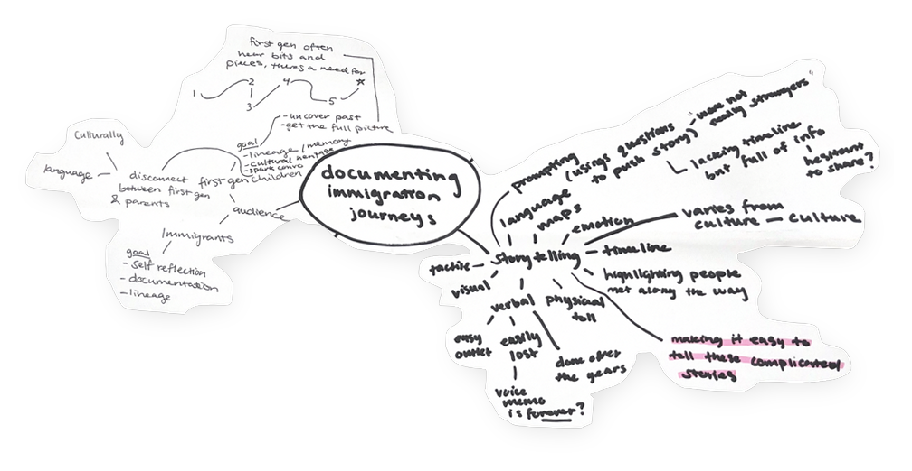
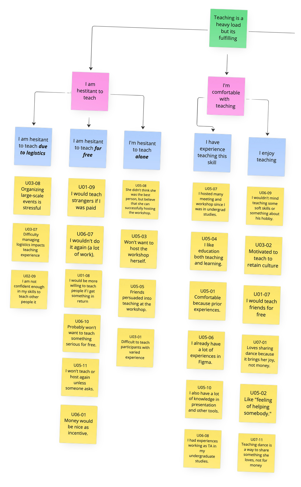
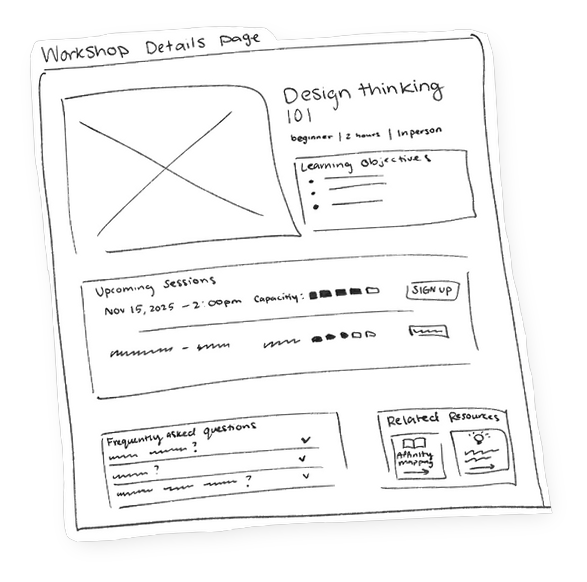

Amplifying community
narratives through design
Creating meaningful experiences through thoughtful research and inclusive design, with projects centered on preserving cultural heritage and confronting social issues.
Maha Sidi | M.S. Human-Computer Interaction, Georgia Tech



